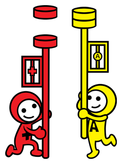
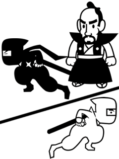
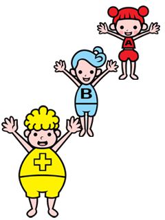
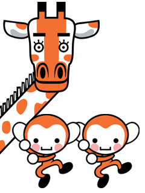
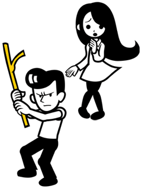
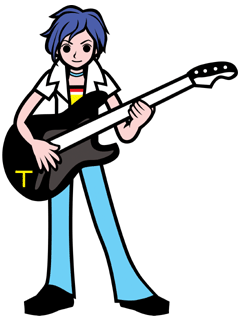

▲index
｜
ステージ１
｜
ステージ２
｜
ステージ３
｜
ステージ４
｜
ステージ５
｜
ステージ６
｜
おまけコーナー
｜
もろもろ

ホッピングロードをささえる裏方たち。
すばらしいバランス感覚で、
微動だにせず丸い玉を待ち構える。
そして遠くからやってくる丸い玉を
リズムにノってポンポンポーンと はじく。
彼らはウワサ話が大好き。
でも、丸い玉と自分たちの仕事には無関心のようだ。
お城の休憩室にて
忍者Ａ
「なぁ、聞いてくれる？」
忍者Ｂ
「また、トノのことだろ」
忍者Ａ
「うん。ゆうべもさぁ、狙われるの分かってて
わざわざ歩き回るんだぜ。困ったもんだぜ」
忍者Ｂ
「しょうがないだろ、恋してるんだから」
忍者Ａ
「え？そうなん？」
忍者Ｂ
「うん。夜も寝れないんだって」」
忍者Ａ
「そうなのかぁ。じゃぁ、仕方ないな」
忍者Ｂ
「うん。仕方ないな」


あかちゃん、あおくん、きーやんの
３人で構成されるトスの選抜チーム。
いつも声をかけあって仲良く練習をしている。
それぞれ必殺ワザをもっており、
必殺ワザを出す前のかけ声がかかると
表情は変わらないものの３人に緊張がはしる！
世界選手権での金メダルを目指して
今日も練習に はげんでいる。
タップが得意な、おさるさん。
キュートな声でプレイヤーをリードしてくれる。
ともだちのキリンは、わりと感動屋さんで表情豊か。
でも、ストイックにタップを刻みたい
おさるさんとしては、ちょっとうっとうしいみたい。
しばらくして おさるさんは、キリンにナイショで
こっそり練習場所を変えたらしい… あらま～。


出会うべくして出会った二人。
先祖の血をうけつぎ、キレのある棒さばきをもつ彼。
そして、そんな彼に守られる運命の彼女。
数百年前より望まれた彼らの出会い、いまここに。
「ＷＩＳＨ 君を待てなくて」を歌うギタリスト。
リミックス５のラストに出演してくれたヨ！

▲index
｜
ステージ１
｜
ステージ２
｜
ステージ３
｜
ステージ４
｜
ステージ５
｜
ステージ６
｜
おまけコーナー
｜
もろもろ
リズム天国トップ
｜
リズムでゲーム！？
｜
ユニークなリズムゲームが40種類！
｜
オマケ要素も盛りだくさん